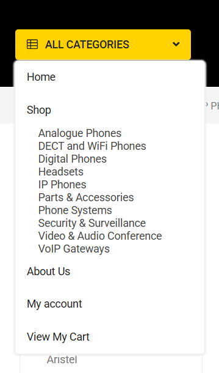

How I Rescued and Rebuilt a Broken WooCommerce Store
Sometimes, working on a real website turns into an unexpected debugging journey. What initially appeared to be a small design problem quickly turned into a deeper investigation involving layout conflicts, plugin issues, caching problems, and editor instability.

Recently, I worked on a WooCommerce store that suddenly started behaving unpredictably after a theme update. The site had multiple layout and functionality issues across different pages.
Instead of applying quick temporary fixes, I decided to understand the root cause and stabilize the website properly. What followed became a valuable learning experience in debugging, problem solving, and improving an existing eCommerce website.
A routine update that broke everything at once
The website was built with WordPress, WooCommerce, and Elementor, and hosted on SiteGround. After the update, several parts of the website started behaving incorrectly.
Some of the issues included:
- The Elementor editor getting stuck while loading
- Navigation menu items and sub-items appearing together incorrectly
- Header and footer styling breaking
- Product page layout misalignment
- Cart page sidebar and cross-sell section appearing incorrectly
- CSS changes failing to apply properly
- General layout inconsistencies across the store
While diagnosing plugin conflicts by temporarily disabling plugins, the site even crashed briefly. Fortunately, I was able to recover it quickly and continue the debugging process.
This situation made it clear that the problem was not a single issue — it was a combination of layout conflicts, caching problems, and plugin interactions.
Investigating the root cause
Instead of making random changes, I approached the problem methodically.
I started by examining:
- Theme templates and layout structure
- WooCommerce page rendering
- Elementor template hierarchy
- Plugin interactions
- Caching layers on the hosting environment
I also used the SiteGround dashboard tools to investigate server-side behavior. Through SiteGround, I explored:
- Cache management
- Site tools and server settings
- Database repair tools
- Hosting environment diagnostics
These tools helped identify where the issues were originating and allowed me to test fixes safely.
Restoring site stability
One of the first goals was to stabilize the website environment.
To achieve this, I performed several recovery steps:
- Identified and resolved plugin conflicts
- Restored plugins carefully after testing
- Performed database repair through WordPress maintenance tools
- Cleared and reset server-side cache
- Regenerated Elementor CSS and data files
These steps helped restore the stability of the website and allowed the Elementor editor to function properly again.
Fixing the Navigation Menu
Another major issue appeared in the website navigation.
The main menu and sub-menu items were displaying together, which made the navigation confusing and visually broken. The dropdown behavior was not working correctly and alignment was inconsistent.
To fix this, I adjusted the menu styling and structure so that:
- Sub-menus appear correctly on hover or interaction
- Menu alignment is restored
- Dropdown spacing and layout are properly structured
After the fix, the navigation menu behaved as expected and looked visually consistent again.


Restoring Header and Footer Styling
During the debugging process, I also discovered that the header and footer styling had been overridden by theme styles, causing background colors and layout spacing to break.
The footer background that appeared correctly in the editor was not rendering properly on the live site.
By inspecting the DOM structure and identifying theme overrides, I restored the correct styling and ensured the header and footer were consistent across all pages.


Rebuilding the Product Page Layout
One of the most noticeable issues was the single product page layout.
There were spacing problems, alignment issues, and unnecessary columns affecting the overall structure.
Instead of trying to patch individual CSS issues, I decided to rebuild the layout properly using Elementor Theme Builder.
This allowed me to:
- Remove problematic layout elements
- Recreate a clean product page structure
- Ensure WooCommerce elements rendered correctly
- Maintain compatibility with the theme and plugins
The rebuilt product page was cleaner, more stable, and easier to maintain.


Fixing the WooCommerce Product Slider
Another issue appeared on the homepage where the WooCommerce product slider widget was not displaying products correctly.
The slider container was visible, but the products inside it were not rendering on the website. Interestingly, the products appeared briefly while the slider was loading and then disappeared.
After inspecting the layout structure and CSS behavior, I discovered that the issue was caused by the theme's grid configuration conflicting with the slider layout.
To resolve this, I implemented a targeted CSS adjustment that restored the correct grid structure for the slider widget.
Once the fix was applied, the product slider began displaying products normally again.


Improving the Cart Page Experience
Another area that needed attention was the cart page.
The section labeled "You may be interested in…" was misaligned and taking up unnecessary space. The cart totals and checkout information sidebar also looked unbalanced.
Instead of only fixing the alignment, I decided to enhance the user experience.
The improvements included:
- Redesigning the cross-sell product layout
- Reducing the number of displayed products
- Adjusting product card size and spacing
- Improving typography and readability
- Enhancing the sidebar layout for better balance
These changes made the cart page cleaner and easier for users to navigate.


Enhancing Product Card Design
While reviewing the store pages, I noticed that product cards had an unnecessary grey background that made the layout feel heavy.
The individual product pages had a cleaner design, so I adjusted the product card styling to match that visual style.
By removing the grey container styling and refining the product card appearance, the store achieved a more modern and consistent look.


Fixing Website Responsiveness
While testing the website after the initial fixes, I noticed that the site was not responding correctly on smaller screens, especially on mobile devices.
Certain sections were overflowing beyond the screen width, and some layouts were not adjusting properly for tablet and mobile views.
To address this, I carefully reviewed the layout containers and responsive settings. By refining the CSS structure and adjusting layout behaviors for smaller screen sizes, I was able to ensure that the website displayed correctly across different devices.
After these adjustments, the website became fully responsive and provided a consistent user experience across desktop, tablet, and mobile screens.


The toolkit behind the fix
During the debugging and rebuilding process, I used several tools:
These tools helped diagnose layout issues, recover the website environment, and rebuild unstable sections of the site.
Not just restored — improved
After completing the fixes and improvements, the website achieved several important outcomes:
The result was not just a restored website, but a cleaner, more stable, and more user-friendly online store.
Lessons from debugging under pressure
This experience reinforced several important lessons.
First, many website issues are not caused by a single problem. They are often the result of multiple systems interacting — themes, plugins, caching layers, and page builders. Understanding how these pieces work together is essential when diagnosing real-world problems.
Second, debugging requires patience and a structured approach. Investigating problems step by step and testing small changes helps prevent unnecessary changes that could make things worse.
Another important lesson I learned is that when multiple issues appear at once, it can feel overwhelming and difficult to know where to start. During this process there were moments when I felt stressed because there were so many things to fix.
What helped me move forward was focusing on the small progress I was making. Each small fix — restoring a layout, stabilizing the editor, correcting an alignment issue — gave me confidence to continue. Instead of panicking when something went wrong, I reminded myself that I had already solved several problems along the way. If I could figure those out, I could figure out the next one too.
Sometimes progress in debugging comes from solving one small problem at a time.
What this taught me about web development
What began as a small layout issue turned into a deeper debugging and stabilization process.
By carefully investigating the problems and rebuilding key parts of the site, I was able to restore the store and improve its user interface along the way.
Working through this experience reminded me that growth in web development does not come only from building websites, but also from learning how to fix them when things go wrong.
I can help you fix it — fast.
Whether it's a crashed WooCommerce store, a broken layout, or just something that feels off — let's figure it out.